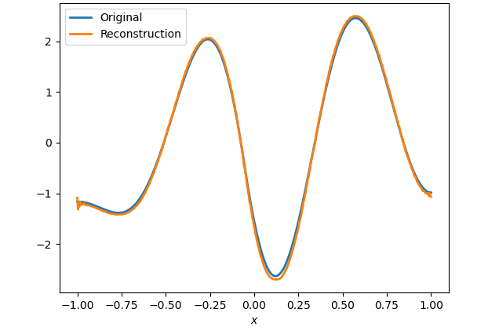
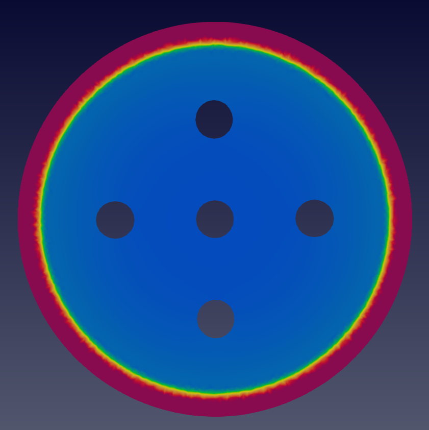

Research
Publications and Presentations
- Venkat, S., Smith, R. C., & Kelley, C. T. (2021). Convolutional Autoencoders for Reduced-Order Modeling.arXiv preprint arXiv:2108.12453. Presentation: SIAM UQ 2022.
- Jiang, Q., Lan, T., Okoudjou, K. A., Strichartz, R. S., Sule, S., Venkat, S., & Wang, X. (2021). Sobolev orthogonal polynomials on the Sierpinski gasket. Journal of Fourier Analysis and Applications, 27(3), 1-38. arXiv preprint arXiv:2010.00107. Presentations: Young Mathematicians Conference 2019, NCSU Summer Research Symposium 2019, SUMS Conference 2019, Joint Mathematics Meeting 2020, Brown University SUMS Conference 2021.
- Bertozzi, A., Chu, W., Fromcke, T., Li, W., Schreiber, I., & Venkat, S. Phase-Separation and Volume Expansion in Lithium-Ion Batteries (available upon request). Presentation: UCLA Summmer Research Symposium 2020.
- Venkat, S., Milind, N., & Reddy, N. (2017). Migration to Mars. UMAP Journal, 38(2).
Center for Computational Geophysics and Optimization (Oden Institute)

I am currently working with my advisor (Dr. Omar Ghattas) and a postdoc (Dr. Milinda Fernando) to study methods for the inverse problem for gravitational wave detection. For this project, I have read the current literature on general relativity and gravitational waves as well as some aspects of the numerical solution to the governing equations. It turns out that the numerical solvers for these equations are extremely computationally expensive, taking several days/weeks for each forward solve. Now, I am currently exploring Gaussian Process (GP) surrogate models. We have trained several GPs on a database of numerical relativity solutions. We are using those surrogates in a synthetic Bayesian inverse problem. For this, we are using the Markov Chain Monte Carlo (MCMC) method using a Delayed Rejection Adaptive Metropolis sampler. We are finding that the GP surrogate works well inside the training data regime, and we hope to use the uncertainty estimates given by the GP to inform future runs of the numerical relativity code. We can also incorporate the GP uncertainty into the Bayesian inference as model error, which leads to an error covariance matrix that is a function of the parameters. Finally, we are studying coordinate transformations and reduced bases that can help simplify the inverse problem.
Los Alamos National Laboratory XCP Summer Workshop (2021)
In the summer of 2021, I worked with researchers Dr. Bertrand Rouet-Leduc and Christopher Ren at LANL to study Generative Adversarial Networks (GANs) for generating synthetic InSAR data to be used in training denoising networks. In particular, we considered several GAN architectures including Wasserstein GANs and Cycle GANs. More details available upon request.
NSF Randomized Numerical Analysis RTG (2018-2021)
At NC State, I worked with Dr. Ralph Smith and Dr. Tim Kelley as part of the NSF RTG on Randomized Numerical Analysis to study reduced-order models that obey conservation laws. In the construction of reduced-order models for dynamical systems, linear projection methods, such as proper orthogonal decompositions, are commonly employed. However, for many dynamical systems, the lower dimensional representation of the state space can most accurately be described by a nonlinear manifold. Previous research has shown that deep learning can provide an efficient method for performing nonlinear dimension reduction, though they are dependent on the availability of training data and are often problem-specific. Here, we utilized randomized training data to create and train convolutional autoencoders to perform nonlinear dimension reduction for the wave and Kuramoto-Shivasinsky equations. Moreover, we presented training methods that are independent of full-order model samples and use the manifold least-squares Petrov-Galerkin projection method to define a reduced-order model for the heat, wave, and Kuramoto-Shivasinsky equations using the same autoencoder.
UCLA Computational and Applied Mathematics REU (2020)
I worked with Dr. Andrea Bertozzi, Dr. Weiqi Chu, and Dr. Wen Li to study phase separation and volume expansion in lithium-ion batteries. Specifically, we wanted to determine how the addition of nanopores in a silicon-based anode would affect the mechanical stress and strains underwent by the battery during the charging-discharging process. While working on this project, I spoke with several experts in math modeling, chemistry, and engineering to better understand the physical context of the problem and develop new methods for analyzing the system. By the end of the project, I was able to create a finite-element solver for fourth-order, nonlinear, time-dependent system of PDEs that was used to model the system on a two-dimensional domain with and without pores and plot hysteresis loops to determine that the addition of nanopores increases the mechanical stability of the batteries over time.
Cornell Summer Program for Undergraduate Research (2019)

In the summer of 2019, I participated in the Cornell Math Summer Program for Undergraduate Research (SPUR), where I worked with Dr. Robert Strichartz and Dr. Kasso Okoudjou to study orthogonal polynomials on fractals. Through the course of this project, I was able to derive recurrence relations for Sobolev Orthogonal Polynomials on the Sierpinski Gasket and create a comprehensive software package in Python that was used to study the properties of these polynomials and enable fast numerical implementations of the results. During the final weeks of the project, I also studied how we can use these orthogonal polynomials to compute quadrature and interpolation rules on fractals. I presented the SPUR work at several conferences — including the Young Mathematicians Conference 2019 and Joint Mathematics Meeting 2020 — and on the SPUR website. Furthermore, I continued to polish and compile the results from the project, and have submitted the paper for publication in the Journal of Fourier Analysis and Applications.